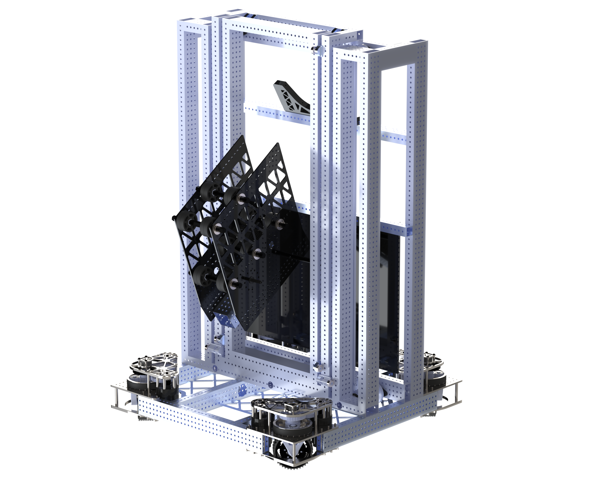
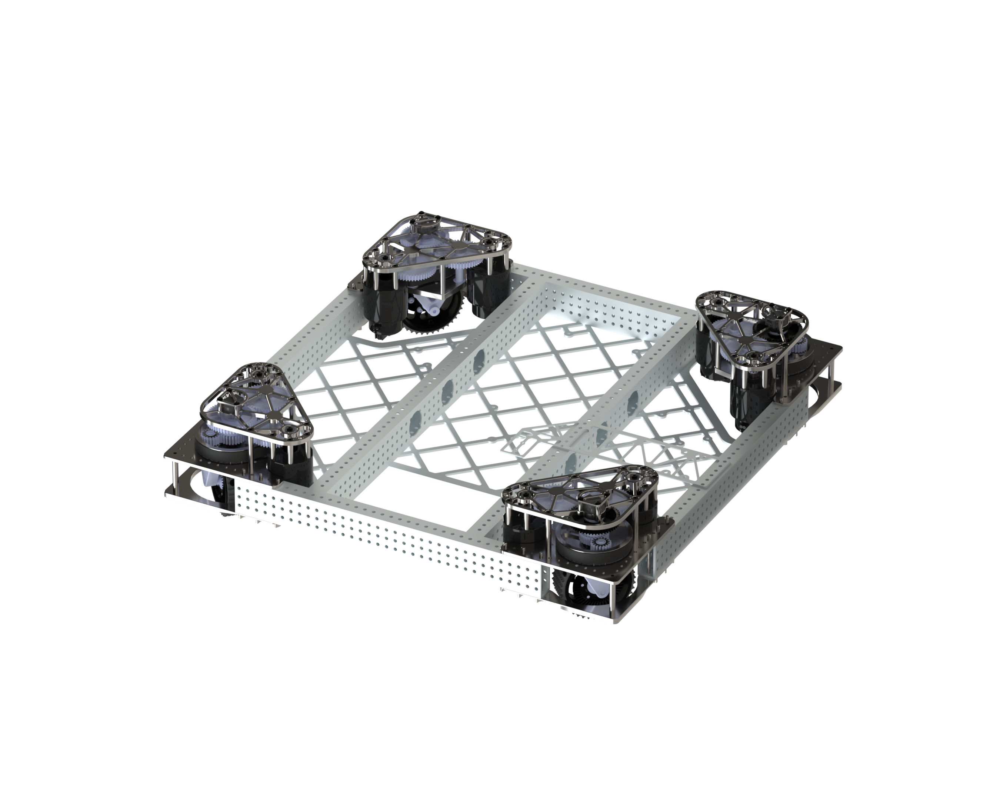
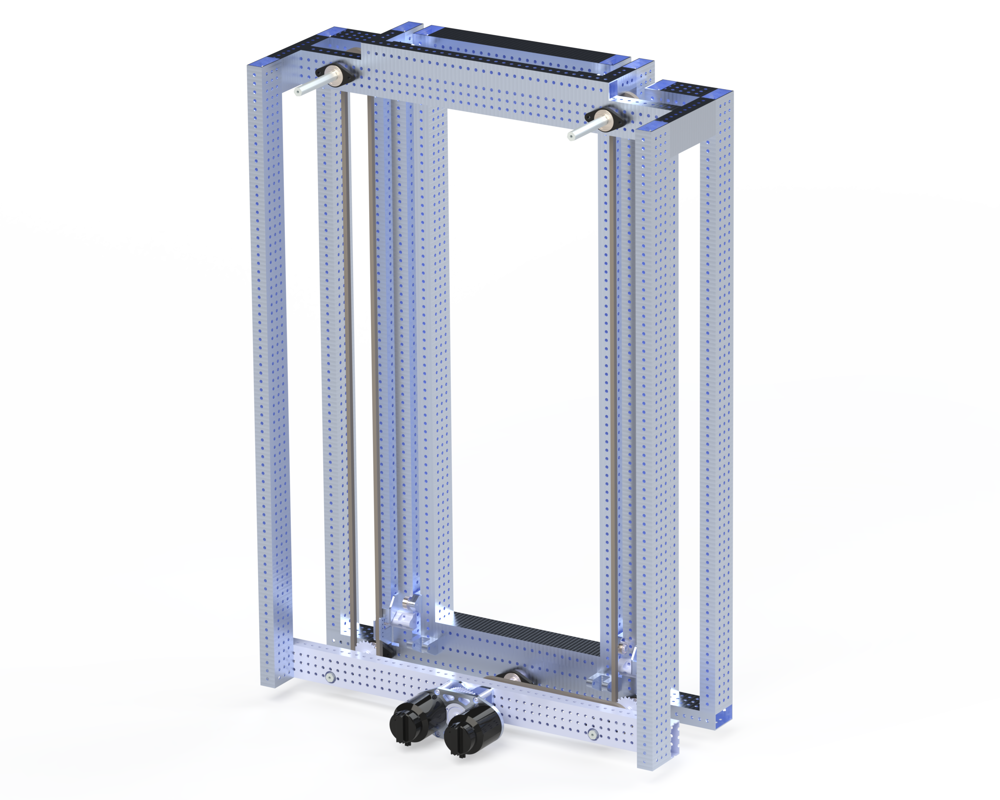
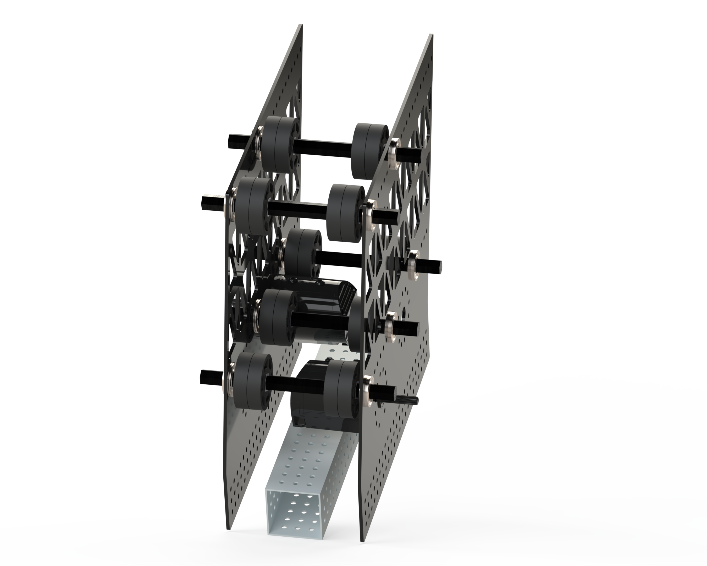
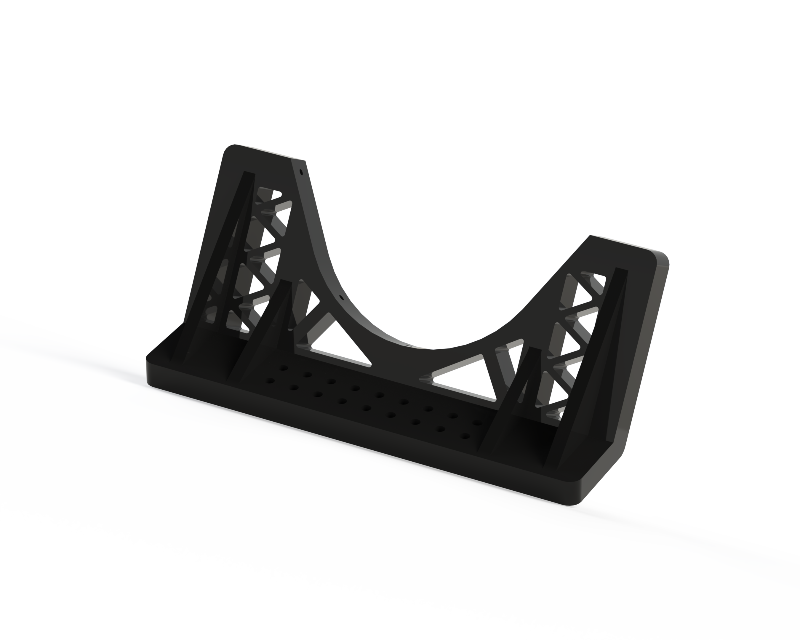

Odyssey | FRC 1923's 2025 Robot
A multi-part unique assembly designed using SolidWorks, and using prototyping strategies and DFM.





Design Process
As a member of FIRST Robotics Competition Team 1923, The MidKnight Inventors for 4 years, I'd learned a lot about the design process and mechanical systems. This robot is from our 2025 season, where I was a Mechanical Captain on the team as well as the Robot Operator. Our design process for this robot started at our kickoff where we learned about the competition's rules and what the field would look like during the season. Based on the game given to us, we then narrowed down the potential robot archetypes based on what they could do and how they would allow us to gain points. After this, we narrowed it down even further and thought about what we wanted our specific robot to do, and after we had decided that we wanted our robot to focus on coral we began prototyping. To begin prototyping we researched games that had been similar to this one, and how teams had gone about designing their subsystems for these games. After we isolated a few designs to prototype, we iterated on our prototypes until we found ones that fit our archetypes and were the most modular. We then CAD'ed our ideas and fabricated them, and kept iterating on what could be improved and what needed to be added.
Mechanical Systems
Drivetrain
Odyssey uses a compact 26" × 26" aluminum chassis with four MK4i L3 swerve modules and 4" wheels. The compact footprint allowed the robot to maneuver quickly around the reef while providing space for the elevator and scoring mechanisms.
Two-Stage Elevator
The cascading two-stage elevator provides approximately 96" of upward extension and is powered by two Kraken X60 motors through a 5:1 gearbox.
Opposing chain runs leave the center of the elevator open, allowing coral to pass through the robot while keeping the mechanism compact.
Static Coral Chute
A passive Lexan chute guides coral from the human-player station toward the scoring mechanism. Its curved geometry allows coral to enter in either orientation and self-center without requiring another powered subsystem.
Coral Scoring End Effector
The modular scoring mechanism uses flex wheels and beam-break sensing to control and position coral. Its modular mounting made it easier to iterate on the design and service the mechanism throughout the season.
CAD Files
Explore Odyssey's robot assembly and individual subsystem CAD.
What I Learned
- How to walk others through the entire mechanical design process.
- How to isolate prototypes and robot archetypes.
- How to prototype iterate on designs.
- Designing for manufacturability.